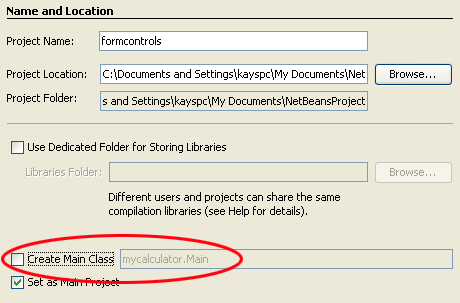
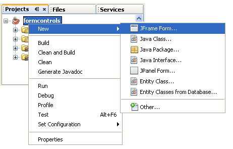
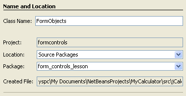
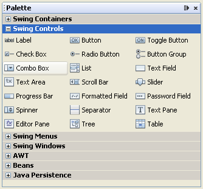
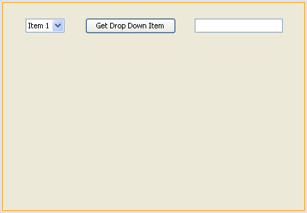
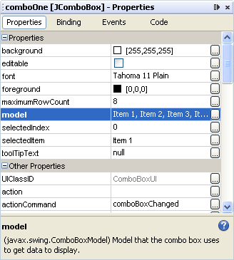
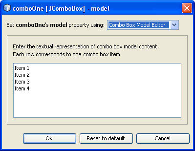
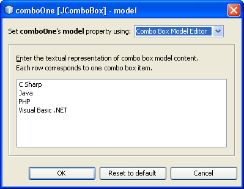
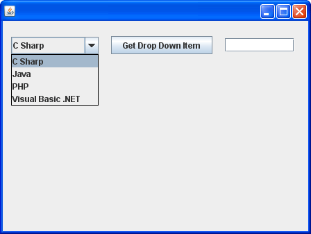
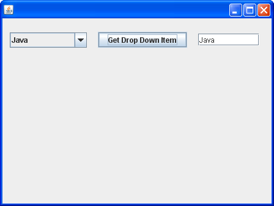

In this section, you'll see how to use some of the more common controls you can add to a Java form. You'll learn how to use the following:
Combo Box
Check Box
Radio Buttons
Text Areas
List Box
Menus and Menu Items
Open File Dialogue boxes
Save File Dialogue boxes
We'll start with Combo Boxes.
Create a new project for this (Java > Application). Call the project formcontrols, and uncheck the "Create main class" box:

Click the Finish button on the wizard to create the project. Now add a form by right-clicking the project name in Projects window and selecting New > JFrame Form:

When the dialogue box appears, enter FormObjects as the Class name, and form_controls_lesson as the package name:

You will then have a Class called FormObjects, which is in the package called form_controls_lesson, which in the formcontrols project.
You will also have a new form on which to add controls.
A combo box is a drop down list of items that can be selected by a user. It can be found in the NetBeans palette, under Swing Controls:

Locate the Combo Box control and drag one on to your form. Drag a Button onto the form, and a Text Field. What we'll do is to place the item selected from the drop down list into the text field. This will happen when the button is clicked.
Click back onto your Combo Box to highlight it. Right-click and select Change Variable Name from the menu that appears. Type comboOne as the new name, and then click OK.
Change the name of the button in the same way, rename it btnComboBox. Change the text on the button to Get Drop Down Item.
Change the name of the Text Field to txtComboBoxItem. Delete the default text and leave it blank. Your form should then look something like this one:

The default items in the Combo Box are Item 1, Item 2, etc. We'll add our own items.
Click back onto your Combo Box to select it. Now look at the properties window on the right of NetBeans. Locate the model property:

Click the small button to the right of the model row, the one with the three dots in it. The following dialogue box appears:

You can highlight the items in the white text area, and delete them. Replace them with the following items: C Sharp, Java, PHP, Visual Basic .NET. Your dialogue box will then look like this:

Click OK when you've made the changes. Your combo box will now be filled with your own items.
Run your programme and test it out: (Just click OK when it asks you to choose the Main Class.)

Close the programme and return to design view.
When the button is clicked, we want the item chosen to appear in the text field. So double-click your button to create a code stub.
To get which item is selected there is a handy method of combo boxes called getSelectedItem. But this returns an Object as a value. What we want is the text from the list. You can do something called casting to turn the Object into a String. Add the following line to your code stub:
String itemText = (String)comboOne.getSelectedItem( );
So we're setting up a string variable called itemText. After the equals sign we use the getSelectedItem method of comboOne. But note how the casting is done - with the String variable type between round brackets. This goes immediately before the object or value you're trying to cast (casting just means converting from one variable type to another).
To display the selected item in the text field, you just need to set the text for the text field. Add this line just below the line you have:
txtComboBoxItem.setText( itemText );
Run your programme again and try it out. Select an item from your drop down list. Then click your button. The item you selected should appear in the text field:

The combo box looks a little dull, at the moment. You can it up with a bit of colour, and different fonts.
Stop your programme and return to Design view in NetBeans. Click on your combo box to select it. Now have a look at the properties window again. Try setting the following:
Background Colour
Foreground Colour
Font
Border
You'll need to play around with them for a while. For the colours, RGB seems to work best.
In the next lesson, you'll see how Java check boxes work.